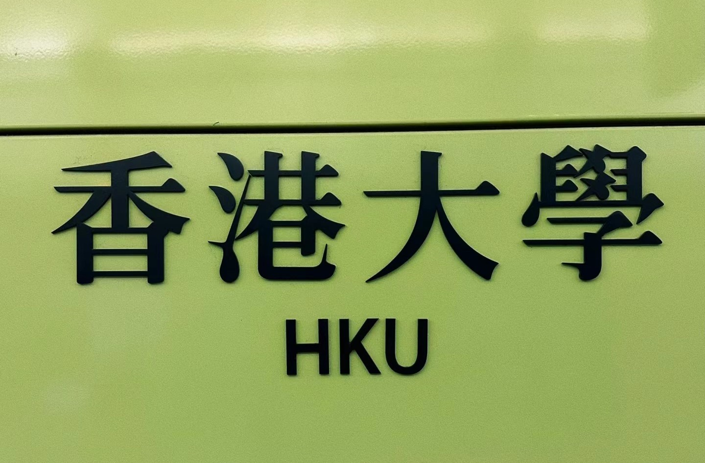
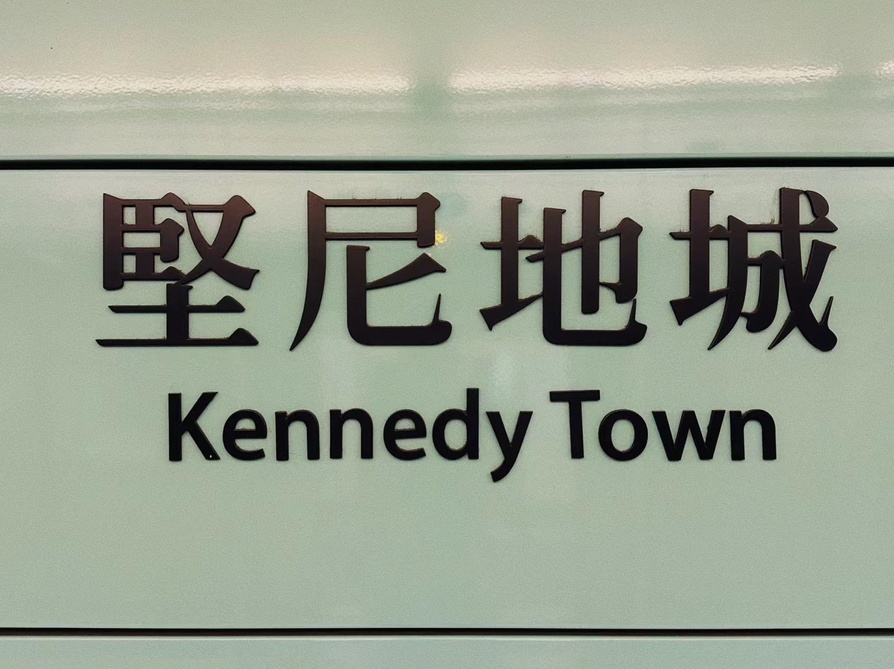
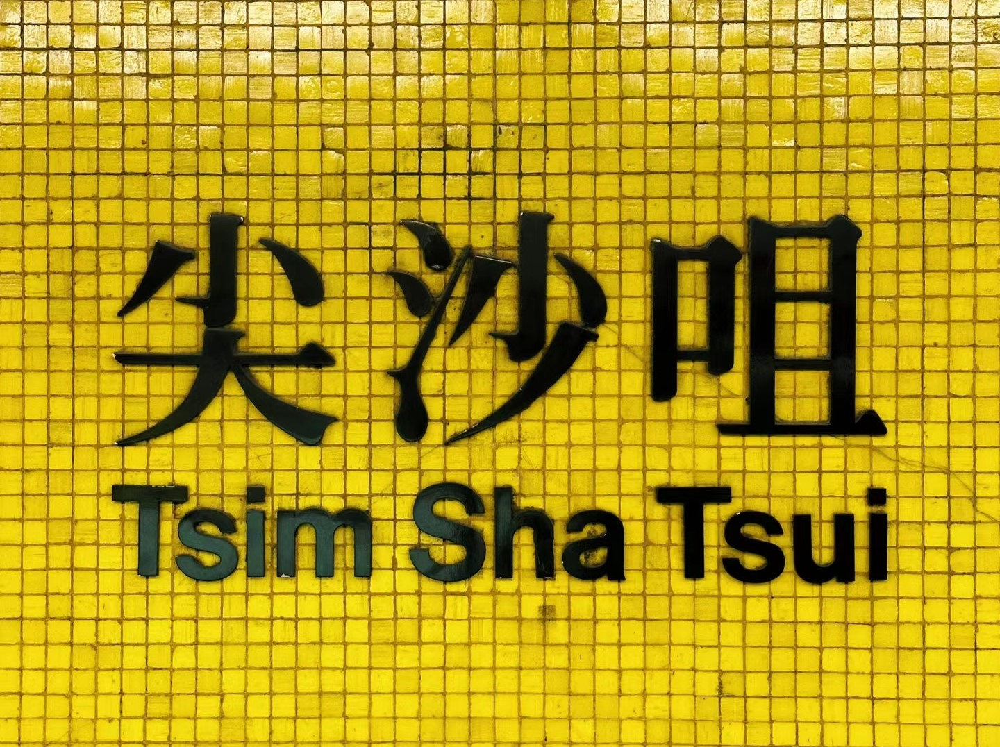
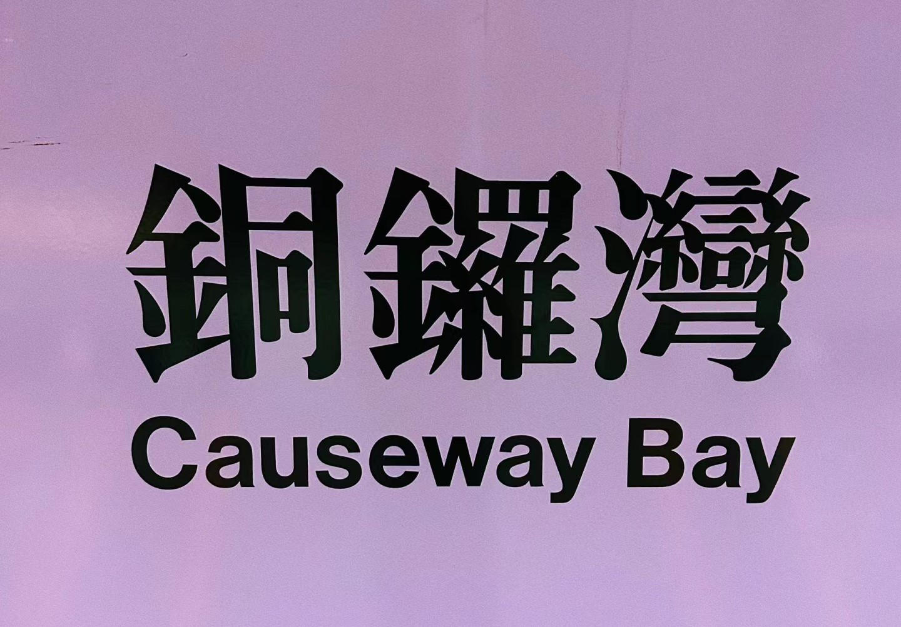

输入搜索的内容
登录




推荐攻略
高铁之后，香港又要地铁直通深圳了？丨香港一日
多家港媒13日报道,深圳市政府正推进罗湖口岸改造,并且长远会探索将香港东铁线引入罗湖境内,并打造一地两检的罗湖口岸,实现50分钟从深圳核心区罗湖直达港岛核心区,让两地核心区域的产业发展实现深度交融。 而紧邻深港边界的过境土地B1地块,将打造战略性新兴产业和现代服务业跨境合作示范园区,“成为境外企业’走进来’的第一站和境内企业’走出去’的桥头堡”。
1834浏览
直新闻
港铁公司(00066)新增香港西九龙站至京沪高铁动卧列车通宵班次 将于明日中午12时发售
智通财经APP获悉,港铁公司(00066)表示,由6月15日起,高铁香港段逢周五至周一,新增来往香港西九龙站与北京及上海的动卧列车通宵班次。票价方面,来往香港至北京西的列车分二等座、动卧上铺及动卧下铺,票价介于937至1448元;香港至上海虹桥的列车同样分二等座、动卧上铺及下铺,并增设高级动卧上铺及高级下铺,票价介于682至2182元。车票明日中午12时,在12306线上票务平台、12306手机App、车站票务柜位、售票窗口及售票机等各售票渠道开始发售。
203891浏览
智通财经网
快讯 | 李家超：京港沪港直通车改由高铁取代 有助香港融入国家发展大局
据中国铁路集团消息，6月15日起京港、沪港间开行夕发朝至高铁动卧列车。对此，香港特区行政长官李家超4日出席行政会议前会见媒体时表示，感谢中央对香港的关怀及国铁集团的支持，满足广大旅客需求，有助促进人员、经贸、文化往来，推动香港更好融入国家发展大局。李家超说，新安排显示，座位数目大幅增至600多个，行车时间缩短一半。通关时间大幅压缩，由原本直通车采用的“两地两检”改为“一地两检”。同时会扩大列车的覆盖范围，涵盖更多高铁沿线车站。列车班次更贴近实际需要，在最受欢迎的周五至周一开出，对接实际需求。李家超表示，已指示特区政府运输及物流局和港铁全面做好落实工作及一系列宣传推广。
34625浏览
新华社